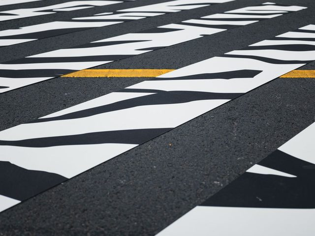
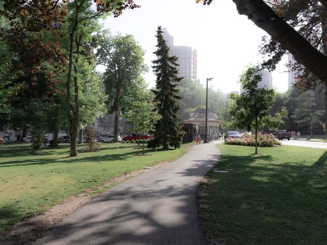
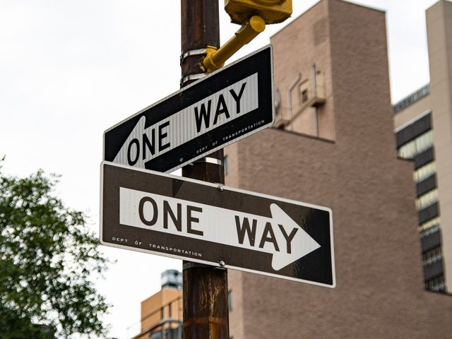
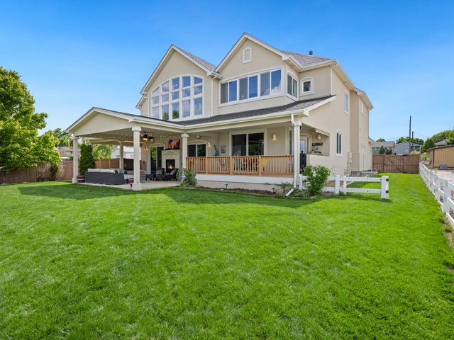

VOCABULARY · LALA WORD UNIT 16
Moo Deng the Pygmy Hippo．一字多義（十六）
wave 是海浪，也是「揮手」；letter 是信，也是「字母」。這個單元有 4 個主題單字、14 個更多單字，再整理 quiet／quite、along／alone／lonely，和字尾 -ful、字首 re-。
共 25 個單字．點 🔊 聽發音

1cheerv. / n.
歡呼；喝采；歡呼；鼓勵
cheer - cheered - cheered - cheering
- 1v.歡呼；喝采 cheer up 打起精神；使開心The fans cheered when the team scored.球隊得分時球迷歡呼。
- 2n.歡呼；鼓勵We gave a big cheer for the winners.我們為優勝者大聲歡呼。
2waven. / v.
浪；揮手；揮手
wave - waved - waved - waving
- 1n.浪The waves are big today.今天浪很大。
- 2n.揮手She gave me a wave from the bus.她從公車上對我揮手。
- 3v.揮手 wave goodbye 揮手道別The kids waved goodbye to their grandparents.孩子們向祖父母揮手道別。

3lettern.
信；字母
複數 letters
- 1n.信I wrote a letter to my pen pal.我寫了一封信給我的筆友。
- 2n.字母The word "dog" has three letters.dog 這個字有三個字母。
4setv. / n.
設定（鬧鐘、規則）；樹立（榜樣）；擺放；一組；一套
set - set - set - setting
- 1v.設定（鬧鐘、規則） set up 架設；成立；set off 出發I set my alarm for six.我把鬧鐘設在六點。
- 2v.樹立（榜樣）Older kids should set a good example.年紀大的孩子應該樹立好榜樣。
- 3v.擺放 set the table 擺餐具Please set the table for dinner.請擺好餐具準備吃晚飯。
- 4n.一組；一套I bought a new set of colored pencils.我買了一套新色鉛筆。
5asconj. / adv. / prep.
當…時；像…一樣；和…一樣；作為；身為
- 1conj.當…時As I was leaving, it started to rain.我正要離開時開始下雨了。
- 2conj.像…一樣Do as I say.照我說的做。
- 3adv.和…一樣 as + 形容詞 + as 和…一樣；as usual 和平常一樣He is as tall as his father.他和他爸爸一樣高。
- 4prep.作為；身為She works as a nurse.她的工作是護理師。
6byprep.
在…旁邊；藉由（方式）；被（被動語態）；在…之前
- 1prep.在…旁邊There is a café by the lake.湖邊有一家咖啡店。
- 2prep.藉由（方式） by oneself 獨自We went to Kaohsiung by train.我們搭火車去高雄。
- 3prep.被（被動語態）This book was written by a teenager.這本書是一個青少年寫的。
- 4prep.在…之前Please finish the report by Friday.請在星期五前完成報告。

7correctv. / adj.
改正；訂正；正確的
correct - corrected - corrected - correcting
- 1v.改正；訂正Correct the mistakes in your homework.訂正你作業裡的錯誤。
- 2adj.正確的That's the correct answer.那是正確答案。

8coursen.
課程；（餐點的）一道菜；路線；方向
複數 courses
- 1n.課程She is taking a cooking course.她在上烹飪課。
- 2n.（餐點的）一道菜The main course is steak.主菜是牛排。
- 3n.路線；方向 of course 當然The plane changed its course.飛機改變了航道。

9crossv. / n.
穿越；使交叉；十字形；叉號
cross - crossed - crossed - crossing
- 1v.穿越Look both ways before you cross the street.過馬路前要看兩邊。
- 2v.使交叉 cross one's fingers 祈求好運Let's cross our fingers for good luck.我們祈求好運吧。
- 3n.十字形；叉號Put a cross next to the wrong answers.在錯誤答案旁邊打叉。
10mindn. / v.
頭腦；想法；心意；介意；小心；注意
mind - minded - minded - minding
- 1n.頭腦 come to mind 浮現腦海A good idea came to mind.我想到一個好主意。
- 2n.想法；心意 make up one's mind 下定決心I changed my mind.我改變主意了。
- 3v.介意Do you mind if I sit here?你介意我坐這裡嗎？
- 4v.小心；注意Mind the gap.小心月台間隙。

11parkn. / v.
公園；停車
park - parked - parked - parking
- 1n.公園Let's have a picnic in the park.我們去公園野餐吧。
- 2v.停車You can't park here.這裡不能停車。

12powern.
力量；能力；電力；能源；影響力；權力
- 1n.力量；能力Music has the power to make people happy.音樂有讓人快樂的力量。
- 2n.電力；能源The typhoon cut the power.颱風造成停電。
- 3n.影響力；權力The king had a lot of power.國王有很大的權力。
13rown. / v.
一排；划（船）
row - rowed - rowed - rowing
- 1n.一排 in a row 連續We sat in the front row.我們坐在第一排。
- 2v.划（船）They rowed the boat across the lake.他們划船橫渡湖面。

14sightn.
視力；視覺；景象；看見；名勝；景點（sights）
複數 sights
- 1n.視力；視覺My grandpa has poor sight.我爺爺視力不好。
- 2n.景象；看見 at first sight 第一眼；out of sight 看不見It was love at first sight.那是一見鍾情。
- 3n.名勝；景點（sights）We saw all the sights of Tainan.我們看遍了臺南的景點。

15signn. / v.
標誌；招牌；符號；記號；手勢；簽名
sign - signed - signed - signing
- 1n.標誌；招牌The sign says "No Parking."牌子上寫著「禁止停車」。
- 2n.符號；記號"+" is the plus sign.「+」是加號。
- 3n.手勢 sign language 手語She can use sign language.她會用手語。
- 4v.簽名 sign up 報名Please sign your name here.請在這裡簽名。

16storen. / v.
商店；儲存
store - stored - stored - storing
- 1n.商店There is a convenience store on the corner.轉角有一家便利商店。
- 2v.儲存Store the rice in a cool place.把米存放在陰涼的地方。

17tidyadj. / v.
整潔的；收拾；整理
tidy - tidier - tidiest；tidy - tidied - tidied - tidying
- 1adj.整潔的Her room is always tidy.她的房間總是很整齊。
- 2v.收拾；整理 tidy up 收拾Tidy up your desk, please.請整理你的桌子。

18yardn.
院子；碼（約 0.91 公尺）
複數 yards
- 1n.院子The kids are playing in the yard.孩子們在院子裡玩。
- 2n.碼（約 0.91 公尺）He kicked the ball forty yards.他把球踢了四十碼遠。
19beautifuladj.
美麗的
beauty + -ful
- 1adj.美麗的What a beautiful sunset!好美的夕陽！
20carefuladj.
小心的
care + -ful
- 1adj.小心的Be careful with the hot soup.小心熱湯。
21thankfuladj.
感謝的
thank + -ful
- 1adj.感謝的I'm thankful for my family.我很感謝我的家人。
22wonderfuladj.
極好的；精彩的
wonder + -ful
- 1adj.極好的；精彩的We had a wonderful time at the beach.我們在海邊玩得很開心。
23usefuladj.
有用的
use + -ful
- 1adj.有用的This app is very useful.這個 app 很有用。
24reviewv.
複習；溫習
re- + view
- 1v.複習；溫習Review your notes before the test.考試前複習你的筆記。
25returnv.
返回；歸還
re- + turn
- 1v.返回；歸還Please return the book by Monday.請在星期一前還書。
FOCUS
易混淆字：quiet 和 quite
| 單字 | 意思 | 例句 |
|---|---|---|
| quiet | （形容詞）安靜的 | Please be quiet in the library. |
| quite | （副詞）相當；頗 | The test was quite easy. |
兩個字只差 e 和 t 的位置，唸法也不同：quiet 兩個音節，quite 一個音節。
FOCUS
易混淆字：along／alone／lonely
| 單字 | 意思 | 例句 |
|---|---|---|
| along | 沿著；一起 | We walked along the river. |
| alone | 單獨的；獨自（客觀描述，沒有別人在） | She lives alone. |
| lonely | 孤單的；寂寞的（主觀感受） | He feels lonely without his friends. |
一個人（alone）不一定寂寞（lonely）。
FOCUS
字尾 -ful、字首 re-
| 原來的字 | 加字首／字尾 | 意思 |
|---|---|---|
| beauty 美 | beautiful | 美麗的 |
| care 小心 | careful | 小心的 |
| thank 感謝 | thankful | 感謝的 |
| wonder 驚奇 | wonderful | 極好的 |
| use 用途 | useful | 有用的 |
| view 看 | review | 複習 |
| turn 轉 | return | 返回；歸還 |
-ful＝充滿…的；re-＝再次、回來。
FOCUS
一字多義：最常見 vs. 容易忽略的意思
| 單字 | 最常見的意思 | 容易忽略的意思 |
|---|---|---|
| wave | 浪 | 揮手 |
| letter | 信 | 字母 |
| set | 設定 | 一組；擺放 |
| course | 課程 | 一道菜；of course |
| mind | 頭腦 | 介意；小心 |
| park | 公園 | 停車 |
| row | 一排 | 划船 |
| yard | 院子 | 碼 |